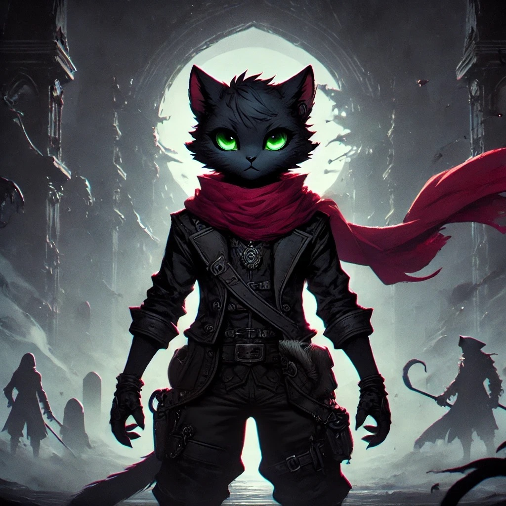

Bienvenido a Las Crónicas de Kuro
Bienvenido a Las Crónicas de Kuro, un sitio donde la fantasía, el misterio y la magia cobran vida a través de las aventuras de Kuro. Sigue sus aventuras en un mundo lleno de secretos oscuros y hechiceros poderosos.Explora aventuras épicas y descubre cómo el token KURO transforma la magia en blockchain.
Descubre el Token KUROCuenta regresiva para el lanzamiento del Token KURO
0
Días
0
Horas
0
Minutos
0
Segundos
¿Quién es Kuro?
Kuro, un valiente gato antropomórfico, navega por un mundo lleno de magia y misterios. Ahora, su historia trasciende con el lanzamiento del token KURO, conectando la narrativa con la tecnología blockchain.
El Token KURO
El corazón del ecosistema de Las Crónicas de Kuro, diseñado para recompensar a los seguidores y ofrecer acceso exclusivo a contenido premium, NFTs y mucho más.
Cómo Participar